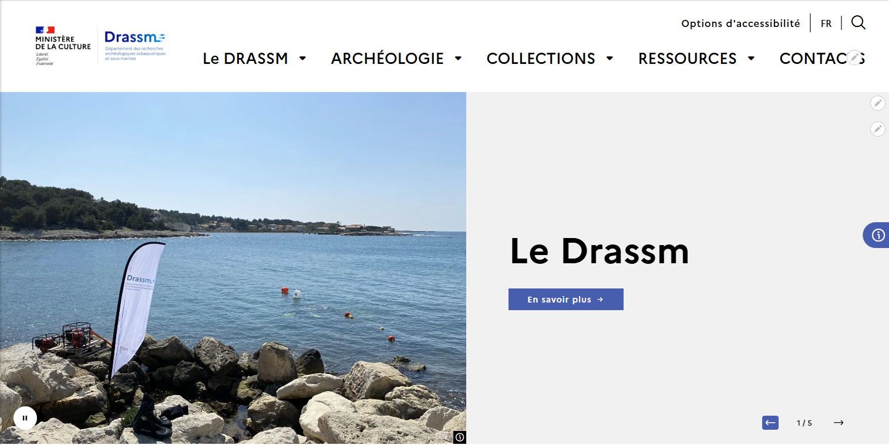

Réguler & Attirer
Affiche institutionnelle pensée pour vulgariser les missions scientifiques du DRASSM auprès du grand public, tout en respectant scrupuleusement la charte graphique de l'État.

Le Flyer Imprimé
Support de diffusion léger pour faire venir le public local aux événements et ateliers de valorisation du patrimoine sous-marin.

La Fiche d'Inventaire
Création technique et rigoureuse d'une fiche d'inventaire de mobilier archéologique sous InDesign. Une mise en page pensée pour l'efficacité des chercheurs.

L'Apprentissage par le Jeu
Conception graphique d'un outil de médiation ludique adapté aux élèves de classes primaires pour les initier aux concepts clés de l'archéologie.

Rendez-vous Éditorial
Création d'un format Réel récurrent (46 secondes) pour dynamiser la communauté Instagram du DRASSM et installer un repère de communication moderne.
Archéo' Time
Affiche au ton décalé et détendu destinée au cadre interne de l'institution. Un levier graphique pensé pour la cohésion d'équipe.

Les Prochaines Visites
Affiche minimaliste annonçant les cycles de visites guidées en Histoire de l'art organisés par l'association.

Présenter l'Asso
Flyer de présentation global des valeurs, de la direction artistique et des ambitions de l'Association Contrast auprès des nouveaux adhérents.

Le Programme Annuel
Mise en page du dépliant contenant toute la programmation culturelle et le calendrier des conférences de l'année.

Escape Game Immersif
Conception technique et design d'une application de jeu patrimonial (JavaScript / GeoJSON).
Tester la Web-App
Maquette One-Page
Dossier de recherche UI et zoning complet d'un projet d'interface web minimaliste sur une seule page.
Consulter le PDF UI
Le Site Complet
Capsule vidéo dynamique présentant la navigation complète, les interactions de survol et le parcours utilisateur d'un site web institutionnel structuré.